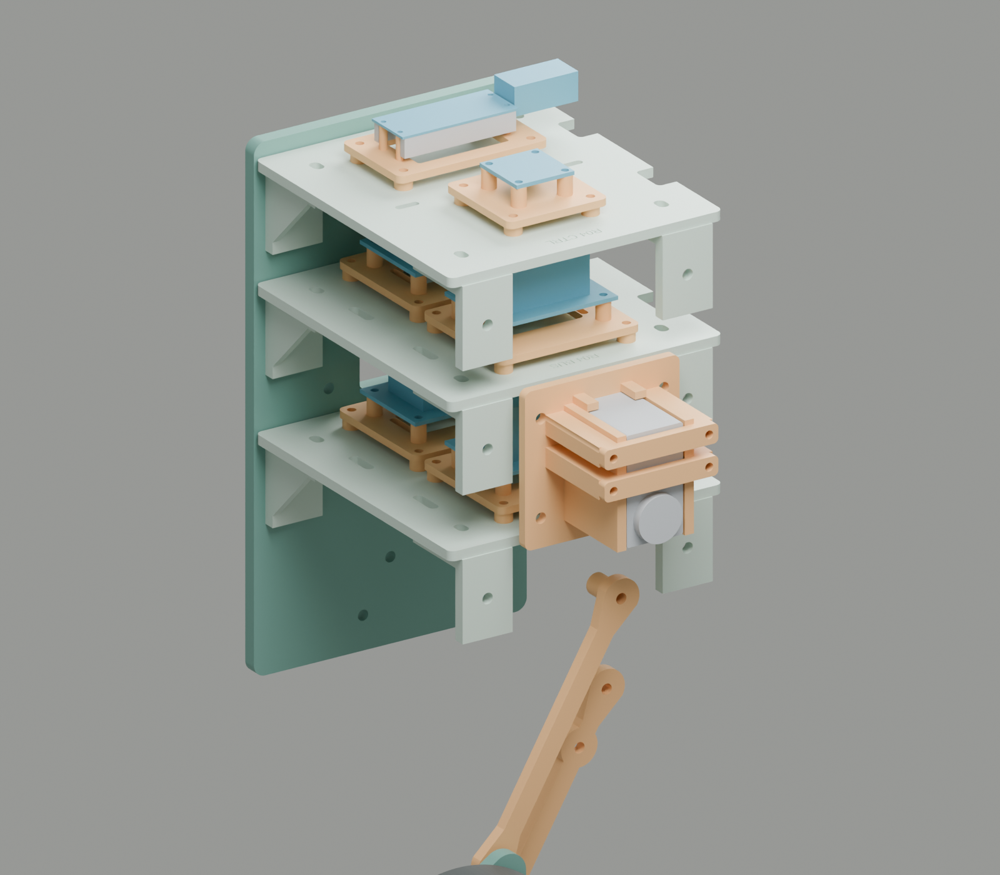
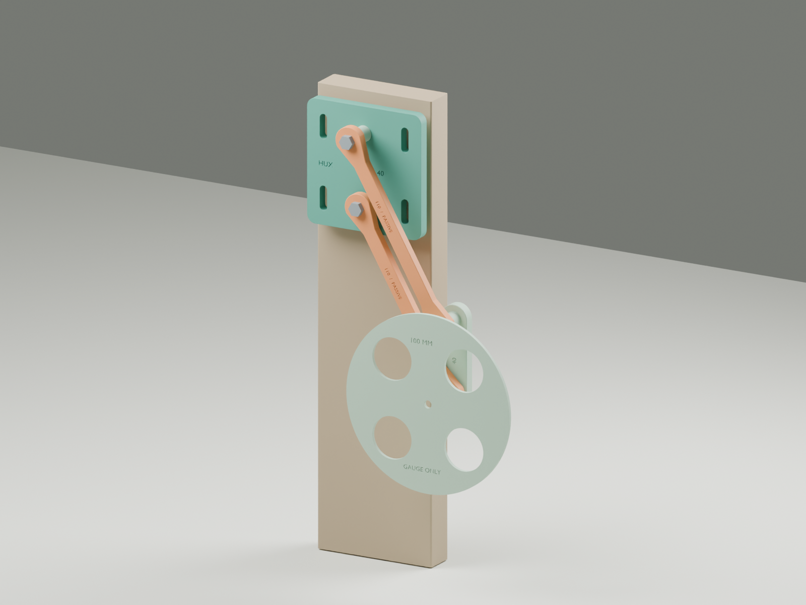

V1-PROOF / Engineering project
Mechanical assembly
General arrangement, passive linkage, printed parts and the joint details that connect them.
ME-04 / One-leg body R04 / 13 October 2026
Matched body and component mounts
The user reports poor body fit and missing actuator mounts. R04 adds three marked decks, side clearance, larger angles and removable electronics mounts. An ST3215 case cradle supports the planned servo. Physical fit and the powered leg transmission remain open.

ME-00 / Passive R01 assembly
The first physical assembly
Two parallel links connect the body plate to the wheel carrier. This rendering shows the printed passive test kit. The wheel disc is a clearance gauge.

ME-01 / Assembly geometry
General arrangement
Small gearmotors at the wheels. Simple parallel links and reduced servos at the legs. Pololu 4752 wheel gearmotors and ST3215 12 V leg servos are locked into this build. Change the pose to inspect the proposed envelope. The mounts remain subject to received-part measurements.

Upright geometry only. The drawing does not simulate balance or validate component fit. Dimensions in millimeters.
Explore the assumptions
- Upright height
- Axle behind pivot
- Static servo demand
- Servo from neutral
3:1 reduction · 60/40 wheel load split · assumed 85% transmission efficiency. Static load only. Mounted tests are still necessary.
Equations, mass budget and limits ↗The tradeoff: height adjustment also moves the axle about 49 mm fore/aft. Measure the center of mass and pitch trim at each pose. Start with the legs pinned. Qualify powered leg-height motion on the free-standing robot after balance works. Supported single-leg bench tests can start earlier.
ME-02 / Drawing register
Layouts & fabrication references
Geometry and print-kit references, with their release status kept visible.
| Reference | Purpose | Status |
|---|---|---|
| ME-04 / R04 body and mount sheets | Matched frame, component mounts, hardware and first-fit samples | CAD checks passed / physical fit open |
| ME-03 / R03 body sheets | Earlier body, decks, lock link and carrier | Superseded after reported body fit problems |
| AN-01 / Animated anatomy | Top, side, front and 3D views from the R04 CAD, with leg motion, balance trim and an electronics x-ray | Estimate / R05 proposals open |
| General arrangement | Side/front envelope and target dimensions | Planning geometry |
| R01 assembly sheet | Passive print-kit assembly | Fit checks open |
| Print kit & assembly notes | Parts, print setup and hand checks | Passive test revision |
| One-leg bench template | Fixture and clearance reference | Setup reference |
| Joint detail sheets | Driven pivot, passive pivots, wheel axle | JD-01 and JD-02 placeholders / pending measurements |
| JD-03 wheel drive mount | Pololu 4752 to carrier R02 and the Ø100 wheel, with live clearance checks | Design proposal R02 / unmeasured |
| Carrier R02 template | 1:1 paper template of the carrier plate | Design proposal / print and compare |


Source documents: mechanical design · sizing & load estimates · bench preparation.